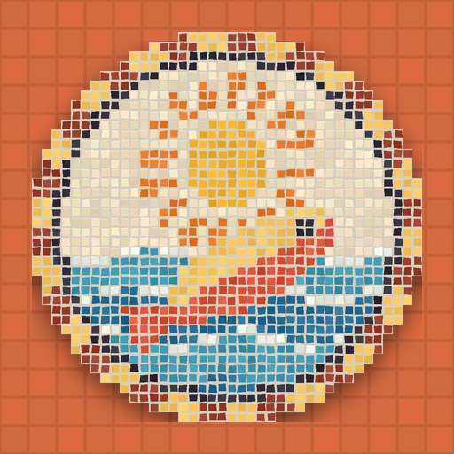

<- all projects

Mosaic Moments
PC
Volume
Live
Bring the town back, tile by tile.
A storm scoured Porto Vela, a little seaside town famous for its mosaics, and left it grey. You come home as the last apprentice of Teodora, the artist who made them all. Open a mosaic in the 3D town, swap and turn the shuffled blocks until each one sets in gold, and lay smashed sections by hand from counted tile trays, copying her sketch. Each finished mosaic goes back up and a shop reopens. 50 mosaics over five districts, a daily mosaic, a free floor for your own designs and, somewhere in Teodora's work, a map.